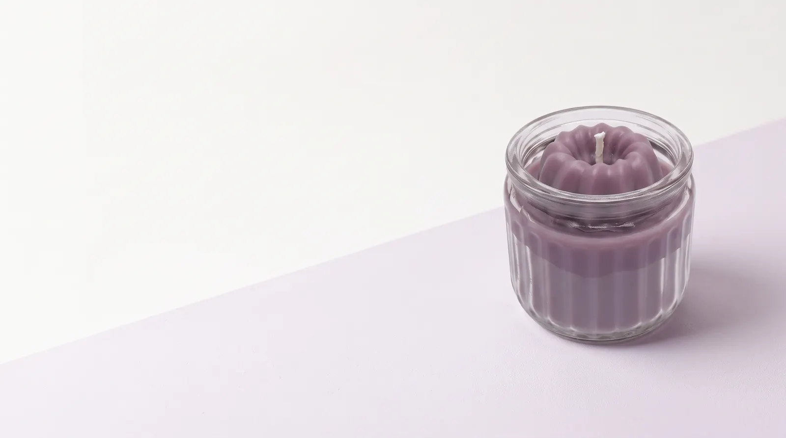
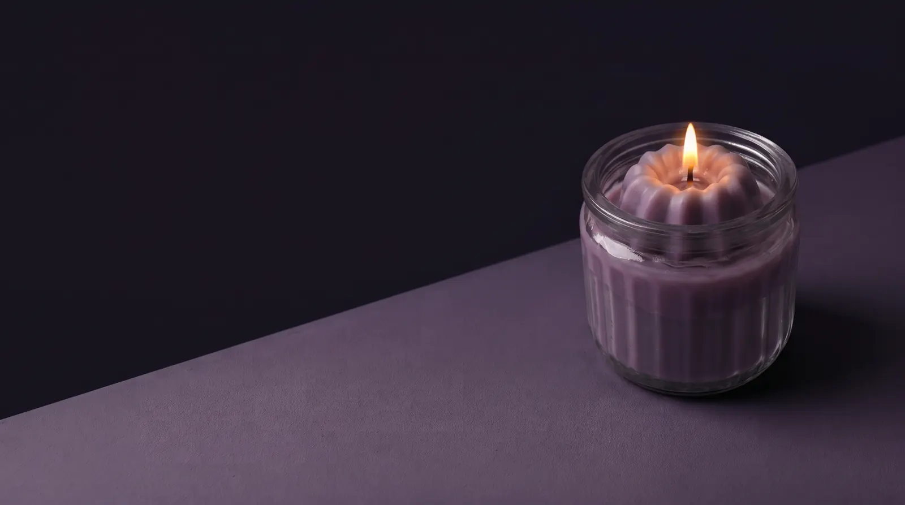

Conócenos
Somos Lucía y Nerea, primas unidas por el apellido de nuestro abuelo: Flores. Hacemos velas a mano, en casa, para que encuentres en su aroma ese momento que estabas buscando.


Tómate el tiempo que necesites para encontrar tu paz.
Somos Lucía y Nerea, primas unidas por el apellido de nuestro abuelo: Flores. Hacemos velas a mano, en casa, para que encuentres en su aroma ese momento que estabas buscando.
Hacemos cada vela a mano y en tandas pequeñas, con cera de soja y coco. Así es como nace cada una:
Todo empieza con una idea: pensamos la colección y elegimos las fragancias que mejor la cuentan.
Fundimos la cera, le añadimos el colorante y, después, la fragancia.
La vertemos en su vaso de cristal, con mecha de madera en la mayoría de velas y mecha tradicional en las pequeñas.
La dejamos reposar al menos una semana, para que enfríe bien y su aroma se asiente.
Y cuando se acabe, el vaso de cristal es tuyo: puedes reutilizarlo.
Edición limitada